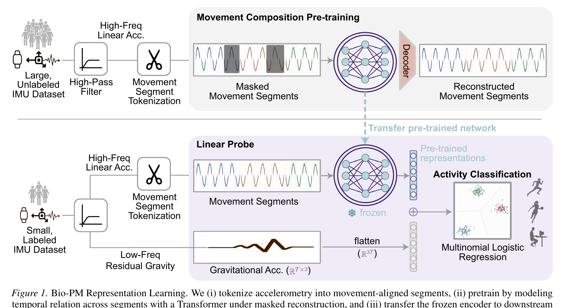
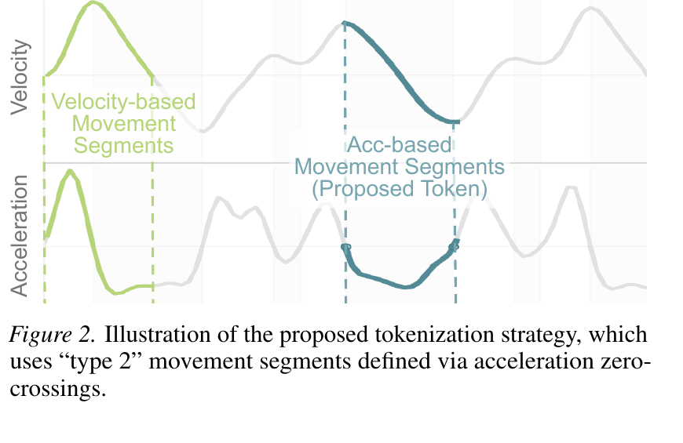

Drawing on the submovement theory of motor control, we tokenize wrist motion into bio-inspired movement segments — the "words" of human movement — and pretrain a Transformer on 28,000 hours of unlabeled wearable data. Bio-PM outperforms every controlled SSL baseline across six HAR benchmarks.
Wearable accelerometers enable large-scale health monitoring, yet learning robust human-activity representations has been constrained by scarce labeled data. While self-supervised learning offers a remedy, existing methods treat sensor streams as unstructured time series, overlooking the underlying biological structure of human movement — a factor we argue is critical for effective Human Activity Recognition (HAR).
We introduce a novel tokenization strategy grounded in the submovement theory of motor control, which posits that continuous wrist motion is composed of elementary basis functions called submovements. We define our token as the movement segment, a unit of motion composed of a finite sequence of submovements. By pretraining a Transformer encoder via masked reconstruction of these tokens, we shift the learning focus from local waveform morphology to high-level structural and temporal organization.
Pretrained on the NHANES corpus (≈28k hours; ≈11k participants), our representations outperform strong wearable SSL baselines across six subject-disjoint HAR benchmarks.
A scalable tokenization strategy that segments continuous accelerometer signals into meaningful movement units using zero-crossings in linear acceleration — the kinematic signature of submovement boundaries.
Bio-PM, a Transformer-based encoder pretrained via masked movement-segment reconstruction. It models temporal relations between segments and captures the compositional structure of human activity.
Movement-segment based pretraining improves label efficiency over SSL baselines: Bio-PM dominates contrastive, augmentation-prediction, and masked-reconstruction baselines on every benchmark we test.
In natural language, words emerge from compositions of phonemes. In motor control, movement segments emerge from compositions of submovements. We exploit this parallel: parse the accelerometer stream into segments at acceleration zero-crossings, encode each with a small CNN, and let a Transformer reason over the resulting sequence with masked reconstruction.

Figure 1. Bio-PM representation learning. We (i) tokenize accelerometry into movement-aligned segments, (ii) pretrain by modeling temporal relations with a Transformer under masked reconstruction, and (iii) transfer the frozen encoder to downstream HAR for linear probing.

Figure 2. Illustration of the proposed tokenization strategy, which uses "type 2" movement segments defined via acceleration zero-crossings.
@inproceedings{tarale2026biopm, title = {Bio-Inspired Self-Supervised Learning for Wrist-worn Accelerometer Data}, author = {Tarale, Prithviraj and Chu, Kiet and Varghese, Abhishek and Liu, Kai-Chun and Xu, Maxwell A. and Iyyer, Mohit and Lee, Sunghoon Ivan}, booktitle = {Proceedings of the 43rd International Conference on Machine Learning (ICML)}, series = {PMLR}, volume = {306}, year = {2026}, }